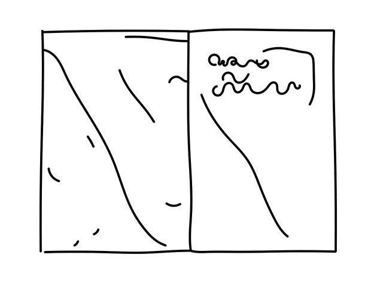
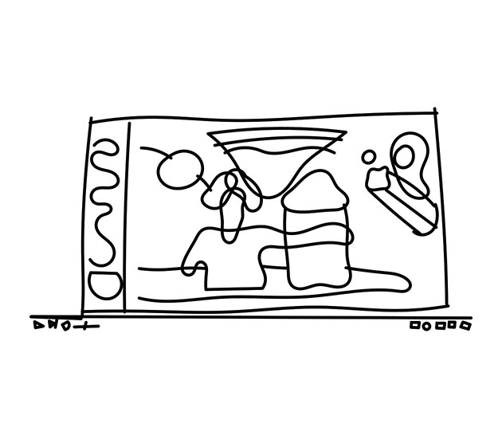

Aurélie William Levaux – sélection
Autrice belge d’une douzaine de livres chez plusieurs éditeurs.
Dit travailler toujours en couple. Différents projets en cours avec Baptiste Brunello. Beaucoup d’écriture. « Quand je vais mal j’écris. J’écris quatre fois par jour tous les jours depuis quinze ans.
Mais sinon, franchement, ça gaze ».
Je réfléchissais à la question de Pierre Huyghebaert qui m’était posée, en marchant vers le Palais de justice pour dessiner avec mes étudiants à un procès à la cour d’appel. C’est toujours une belle expérience, un truc excitant, de devoir sélectionner les préférés d’un genre, je me disais. Je faisais ça quand j’étais gamine, tout classer et puis remettre des cotes fictives aux auteurs que j’aimais, je me faisais un prix Bernard Versele perso. J’avais repensé aux jurys auxquels j’avais participé dans ma vie, à celui où j’étais un juré, une jurée, en Suisse, dans un festival d’animation, par exemple. Le problème qui se posait, qui s’était posé, là-bas, avait été celui du consensus. Ce jour-là, on était huit, et on avait fini par choisir le film d’animation qui dégoûtait le moins tout le monde, puisque tout le monde avait choisi autre chose que chacun, et que personne n’avait réussi à défendre assez bien le grand élu de son cœur. Le choix final avait donc été un film relativement mou, un truc pas trop risqué, pas trop gerbant, qui mettait tout le monde d’accord, mais qui ne faisait vibrer personne non plus, d’une façon assez décevante. C’était quand même un peu con, merci la démocratie, je m’étais dit. Je pensais à ça, en chemin, avant qu’on se fasse fouiller les sacs à l’entrée du Palais de justice et que Rémi ne renverse son encre de Chine sur les pieds d’un policier.
Et puis j’ai réfléchi mieux à la question qui m’était posée. J’ai réfléchi à la bande dessinée. J’ai essayé de me souvenir des bouquins francophones qui m’avaient le plus touchée depuis les cinq dernières années. Je me rendais compte que ce qui m’avait vraiment émue et bouleversée, c’était quand j’étais plus jeune, il y avait plus de cinq ans, il y avait vraiment beaucoup plus d’années que ça. « Est-ce qu’on est plus ému quand on est jeune ? » je me suis demandée, en proie à la panique. Non, je me suis reprise, j’étais à présent émue par d’autres choses, c’était normal, non ? Et d’abord, je suis pas vieille, j’ai pensé tout haut, ce qui a fait sursauter Rémi à mes côtés. Brecht Evens, Camille Lavaud, Simon Roussin, Marion Fayolle, Moolinex, Olivier Shrauwen, j’ai songé, sans la moindre originalité. Je m’apercevais qu’à force d’être dans le milieu et de voir défiler les livres et des comptes Instagram pleins d’images et de textes mélangés, je ne voyais plus grand chose, mon regard devenait trouble, je lisais à peine, je perdais la mémoire, un peu blasée que j’étais devenue. Je voyais bien qu’à force de travailler sur mes trucs et de me focaliser sur la profondeur de mon nombril, je me désintéressais du reste et des autres qui pratiquaient comme moi cette pratique d’autiste. Tout ce qui me revenait à l’esprit de mes lectures récentes chamboulantes était le bouquin féministe de Mona Chollet qui n’avait rien, mais alors rien, d’une bande dessinée.« Étais-je devenue une connasse égocentrique et inculte ? » j’ai soupiré en regardant l’accusé entrer. Et puis, pendant qu’un témoin racontait qu’il avait entendu des coups de feu, oui, mais qu’il pensait que c’était un pétard pirate et que c’était pour ça qu’il n’avait pas réagi, j’ai fait un effort de concentration de ouf, à en suer des gouttes, pour répondre vite et correctement à la demande que Pierre Huyghebaert m’avait faite, parce que je me faisais toujours un devoir de répondre vite et correctement aux attentes des gens, pour une raison qui m’échappait, d’ailleurs, par peur d’être mal-aimée et jugée, j’imagine, comme tout le monde. Enfin bref, j’ai fini par trouver des trucs.
Revue Lagon
Parution depuis 2014
Avec plein de supers comme Bettina Henni, Sammy Stein, Sarah Louise Barbett, Roxane Lumeret, Alexis Beauclair, Ludovic Boulard, Le Fur, et les meilleurs du fanzine pas très punk d’accord, mais très noble.
Le Mégot éditions
Comme son nom l’indique, c’est une maison d’édition, et pas une BD, ce n’est pas une maison d’édition de BD, mais quand même un peu et elle est super, surtout qu’il y a Baptiste Brunello dedans, et d’ailleurs, il n’y a que ça que j’ai lu, mais je sais que ça vaut le coup de s’y pencher.
Clubb Guitos
[Hors-sélection]
Oui, bon, là, c’est encore pire comme ça n’a rien à voir, puisque ce sont des courts-métrages, mais quand même si j’étais un jeune, je voterais pour ça. (www.youtube.com/watch ?v=sxIK98q_Wq4)
Camarades, à présent je suis de droite et Citations pour le président Sarkozy, Juan Pérez Agirregoikoa, éditions Matière, 2005 et 2009
[Hors-sélection]
Je pense qu’il n’est pas francophone, mais comme c’est édité en français, c’est OK. Les textes sont chiants, mais les bouquins sont magnifiques.
Planète Dommage, Baptiste Brunello
C’est pas parce que c’est mon mari, mais je trouve cette vidéo de série de dessins très bande dessinée et vraiment super enrichissante et questionnante. En réalité, ce serait mon premier choix !
(www.youtube.com/watch ?v=LHxRWQZawJg)